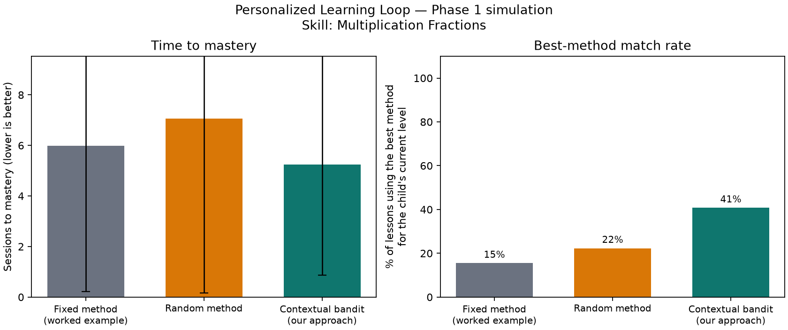

PerLearn
Watch a child learn over weeks. The system tests teaching methods against delayed checks, then changes how it teaches as mastery grows — not a one-time learning-style label.

We do not label children with learning styles. We measure which method reaches real mastery for this child right now — and we change as they grow.
In simulation on ASSISTments fraction parameters, the contextual bandit reaches mastery faster than fixed or random method assignment.